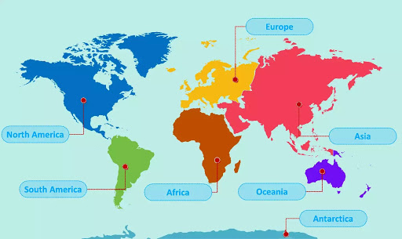

Kontinenti
Kontinenti predstavljaju velika kopnena područja na Zemlji. Oni su delovi kopnenih ploča koje se pomeraju po površini Zemlje veoma malim brzinama. Pre 290 miliona godina nastao je prakontinent Pangea (u prevodu sa grčkog „sva zemlja”) okružen ogromnim okeanom nazvanim Pantalasa (u prevodu sa grčkog „sva voda”). Pre otprilike 250 miliona godina došlo je do sudara tektonskih ploča, što je izazvalo zemljotrese na kopnu i na okeanskom dnu. Prakontinent je napukao, a zatim je more Tetis polako razdvojilo Pangeu na dva kontinenta – Lauraziju (današnja Azija) i Gondvanu. Zatim se, pre 163 miliona godina, Gondvana podelila na Afriku, Antarktidu, Australiju i Južnu Ameriku. Ti kontinenti su se s vremenom međusobno udaljili, čime su stvoreni južni deo Atlantskog okeana i Indijski okean. Na kraju, pre 60 miliona godina severni deo Atlantskog okeana polako se odvojio, čime su konačno stvorene Evropa i Severna Amerika.
